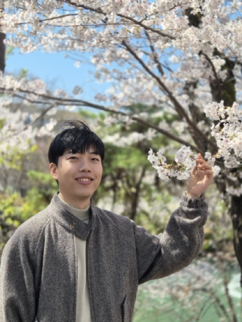
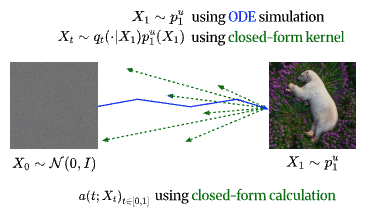
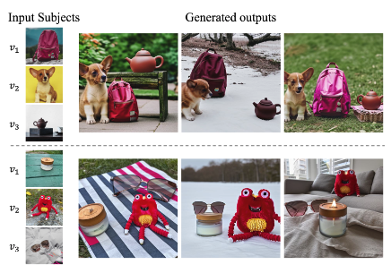
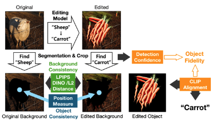

Dongsoo Shin
dongsoo [at] snu [dot] ac [dot] kr
I am a PhD student in the Graduate School of Data Science (GSDS) at Seoul National University (SNU). I am grateful to be advised by Professor Joonseok Lee at the VIP Lab. I work on diffusion and flow models, with a focus on making their training and generation more efficient.
Publications
-
2026

-
2026

-
2025

Towards Scalable Human-aligned Benchmark for Text-guided Image Editing
CVPR 2025 · Highlight